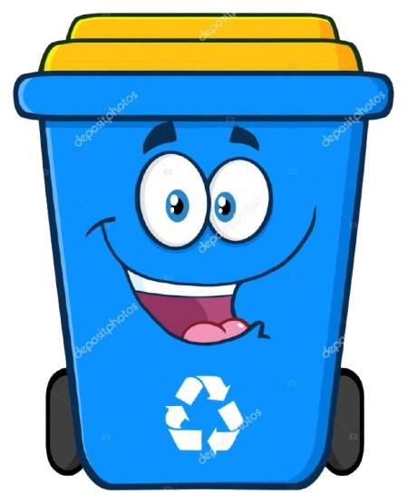
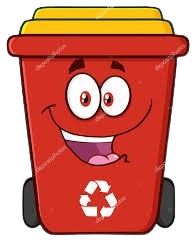
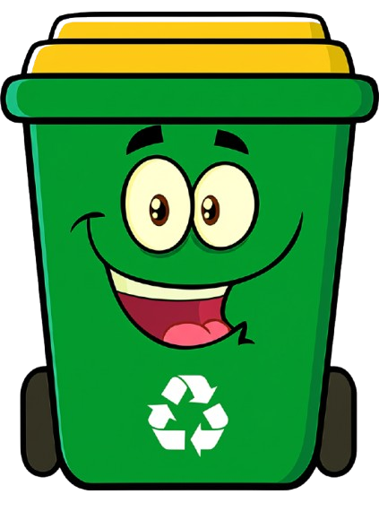
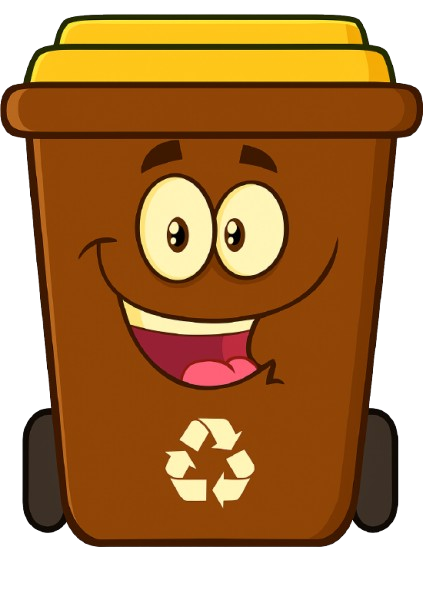

Reciclar é transformar o mundo começando por você.
De onde surgiu o processo de reciclagem?
A separação de lixo não foi inventada por uma única pessoa.
Essa prática é tão antiga quanto a própria humanidade, com povos antigos reutilizando materiais para criar novos itens.
No entanto, o inventor da separação de lixo moderna foi Gary Anderson, um jovem estudante de Arquitetura e Ciências Sociais da Universidade da Califórnia do Sul.
A separação do lixo é fundamental para a preservação do meio ambiente, a saúde pública e a economia.
Qual a importância da reciclagem?
Ao separar corretamente os resíduos recicláveis (como papel, plástico, vidro e metal) dos orgânicos e rejeitos,
facilita-se a reciclagem e o reaproveitamento de materiais, reduzindo a necessidade de explorar novos recursos
naturais Essa prática também diminui a poluição do solo, da água e do ar, contribui para a redução do volume de
lixo nos aterros sanitários e prolonga sua vida útil. Além disso, gera empregos e renda para muitas pessoas
envolvidas na cadeia da reciclagem, desde catadores até trabalhadores de cooperativas. Separar o lixo ainda
promove a conscientização sobre o consumo e os impactos dos resíduos gerados, incentivando hábitos mais sustentáveis.
Em muitos locais, essa prática é obrigatória por lei, colaborando com o cumprimento das normas ambientais. Portanto,
separar o lixo é uma atitude simples, mas com grandes benefícios para a sociedade e o planeta.

Papel
O que vai: jornais, revistas, folhas de caderno, caixas de papelão, embalagens de papel, envelopes, papel sulfite, rascunhos e cartolinas.
O que não vai: papéis engordurados, papel higiênico, papel carbono, guardanapos sujos, fotografias.
Função: A lixeira azul é destinada ao descarte de materiais de papel limpos e secos.
Esse tipo de resíduo pode ser reciclado e transformado em novos produtos, como papel reciclado, caixas e embalagens.
A separação correta ajuda a reduzir o corte de árvores e o consumo de água na produção de papel novo.

Plástico
O que vai: garrafas PET, potes de alimentos, sacolas plásticas, frascos de produtos de limpeza, brinquedos de plástico,
tubos de pasta de dente.
O que não vai: plásticos sujos de alimento, isopor sujo, embalagens de remédios.
Função: O plástico demora centenas de anos para se decompor. Separá-lo adequadamente permite que ele seja reciclado e usado na produção de novos objetos, como vassouras, baldes, tecidos e até peças de veículos. A reciclagem ajuda a reduzir o volume de resíduos em aterros sanitários e a poluição dos oceanos.

Metal
O que vai: latas de refrigerante, tampas de metal, embalagens metálicas, arames, alumínio, pregos, talheres metálicos velhos.
O que não vai: pilhas, baterias, objetos enferrujados perigosos, latas de tinta ou solventes com resíduos.
Função: Os metais recicláveis podem ser fundidos e reutilizados em vários setores industriais, economizando energia e matérias-primas.
A reciclagem de alumínio, por exemplo, consome até 95% menos energia do que a produção a partir do minério.

Vidro
O que vai: garrafas, frascos de alimentos, potes, copos e vidros de conserva.
O que não vai: espelhos, vidros temperados, cerâmicas, porcelanas, lâmpadas e vidro quebrado solto.
Função: O vidro é 100% reciclável e pode ser reaproveitado infinitamente sem perder qualidade.
A separação correta evita acidentes com os coletores e facilita o reaproveitamento na indústria para novos frascos e produtos.

Orgânico
O que vai: restos de comida, cascas de frutas e legumes, borra de café, chá, alimentos vencidos, folhas secas.
O que não vai: carne crua, fezes de animais, óleos e gorduras, ossos grandes.
Função: Os resíduos orgânicos são biodegradáveis e podem ser transformados em adubo (composto orgânico) por meio da compostagem. Isso reduz a quantidade de lixo enviado a aterros sanitários e melhora a fertilidade do solo em hortas e jardins.